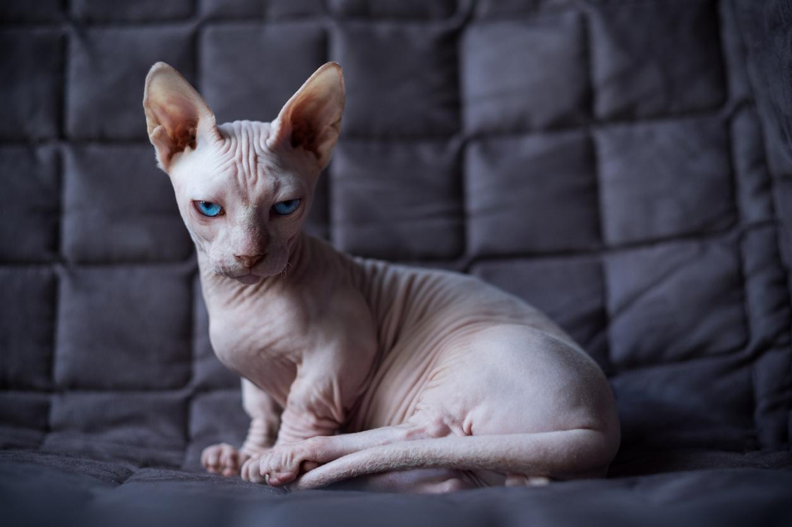

La raza de gato minskin es bastante reciente, pues, como hemos avanzado, solo cuenta con dos décadas de antigüedad. El criador de Boston, Paul McSorley, decidió crear un gato sin pelo con patas cortas en torno al año 1998. Para ello cruzó a un sphynx, que carece de pelo, con un gato munchkin, de patas cortas. En este proceso de creación también intervinieron razas como el birmano y el devon rex. El primer gato de esta raza, llamado Rory, nació en el año 2000. Poco a poco fueron naciendo más gatos minskin, alcanzando los 50 ejemplares en el año 2005. A día de hoy se sigue considerando un gato muy raro de encontrar.
Los gatos minskin son unos felinos muy llamativos. Su constitución es robusta, tienen patas cortas, algo de pelo en la cara y en las extremidades, pero nada en otras localizaciones, especialmente en el vientre, que siempre carece de pelo. Son de pequeño tamaño, con un peso de adultos de 2 a 4 kg. Las principales características físicas de los gatos minskin son:
Cabeza redonda y ancha.
Orejas grandes y triangulares siempre erguidas.
Ojos redondos y grandes de color a juego con la piel.
Barbilla fuerte.
Ausencia o escasos bigotes.
Mejillas con relieve.
Hocico corto.
Cuello flexible y bien desarrollado.
Pecho amplio y fuerte.
Patas traseras de corta longitud y prácticamente igual o algo más largas que las delanteras.
Pies redondos.
Cola de longitud media con punta embotada.

Se encuentra en diferentes colores y patrones, ya que todos son posibles y todos están igualmente aceptados.

Es un pequeño felino muy afectuoso y fiel con sus cuidadores. Además, se lleva bien con los niños porque adora jugar y la atención que estos le dan, pero igualmente siempre hay que educar y enseñar a los más pequeños de la casa cómo se debe tratar a un gato.
También son unos felinos muy inteligentes, alegres y enérgicos. Adoran saltar, trepar y mantenerse activos durante mucho tiempo. Sus patas cortas no impiden que estos gatos dispongan de una gran agilidad ni que disfruten de las alturas como cualquier gato de patas largas. Además, son muy fuertes.
Por otra parte, pueden estar prácticamente con todo tipo de personas, siempre que estas les ofrezcan atención, cuidados, actividad y amor a diario. También toleran bien a distintas especies de animales y se adaptan a diferentes espacios

La falta de pelo de estos gatos hace que requieran unos cuidados especiales. Así, deben mantenerse siempre a una buena temperatura en invierno, mientras que en verano hay que proteger su piel del sol para evitar los daños de las radiaciones solares directas. Se recomienda bañarlos con un champú especial y limpiar la secreción de su piel con frecuencia. De la misma manera, hay que asear también sus orejas que, al carecer de pelo y ser grandes, tienden a acumular mucho cerumen y están predispuestas a infecciones. Otro punto de atención son sus dientes para mantener una buena higiene que prevenga infecciones y otros trastornos incómodos. Además, al realizar estas acciones podemos detectar precozmente problemas de salud que afecten al canal auditivo o a la cavidad bucal. Su alimentación debe ser de calidad. Si se le da alimento seco, se recomienda combinarlo con comida húmeda y repartir ambas en varias tomas al día.

A esta raza se le atribuye una esperanza de vida de 9 a 13 años. Aún es muy frecuente como para asociarla a patologías propias, pero pueden extrapolarse las de sus progenitores, especialmente los de la raza munchkin, que destacan por dos enfermedades genéticas importantes derivadas de la escasa longitud de sus patas:
Lordosis: exagerada curvatura de la columna vertebral en la parte baja de la espalda que hace arquear el dorso y levantar la parte posterior del cuerpo. Esto puede causar dolor, tensión y rigidez muscular en la zona baja de la espalda, lo que empeorará la calidad de vida de nuestro gato minskin.
Pectus excavatum: malformación congénita del esternón que produce su deformidad cóncava, haciendo que se hunda el pecho, lo que puede derivar en una mala función del corazón o de los pulmones, comprometiendo la respiración y la circulación correcta de sangre por el organismo del felino. Estos ejemplares tienen una supervivencia limitada.
Con respecto a los progenitores sphynx, estos son más susceptibles a problemas dermatológicos como alergias, parasitosis, traumatismos y hongos.